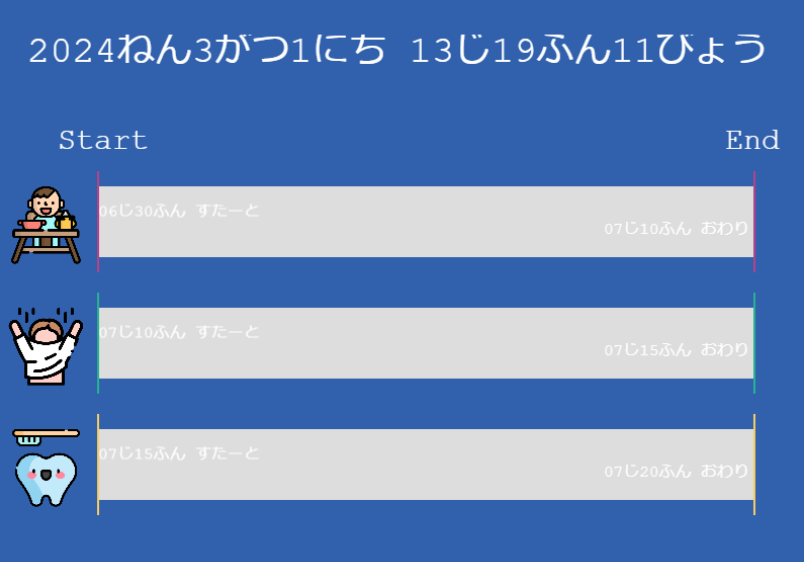
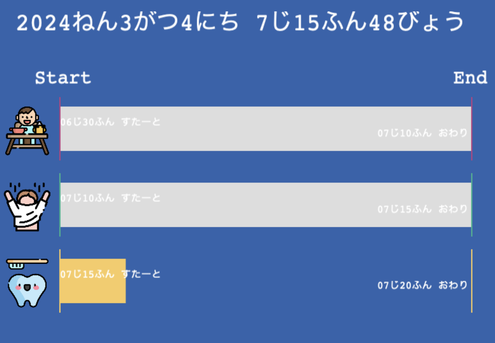

頑張らないために頑張る
ゆるく頑張ります
時計が読めない幼児でも朝のルーティンをスムーズに！Phaser.jsを使ったルーティンタイマーの作成
はじめに
朝のルーティンは、時計が読める大人でもなかなか上手くこなすのは難しいものです。これが時計がまだ読めない幼児の場合だと、ルーティンをこなすのが一層困難になるでしょう。そこで、JavaScript（以下、JS）とJSのゲームライブラリであるPhaser.jsを使ったルーティンタイマーを作成することで、時計が読めない子供でもスムーズに朝のルーティンをこなせるようにしたケースを紹介します。
いきさつ
始まりは、実家に帰省した際に弟（既婚、子持ち）から聞いた「子供が朝のルーティンを上手くこなせない」という話です。
弟「子供が全然登園準備できなくて、朝が超忙しい。」
俺「何歳だっけ？5歳？」
弟「そうそう。一応、自力で着替えも食事もできるはずなんだけど。」
俺「オメーとかが見てやればいいんじゃね？」
弟「オレもヨメさんも朝出るのが早いから、ずっとは見てやれないんだよ」
俺「んじゃ、その1人になったタイミングでボーっとしちゃうわけか」
弟「そうそう。」
俺「5歳じゃ時計読めないだろうから、XXXXってテレビ番組が始まったら着替え開始！って指示するのとかは？」
弟「もう試した。テレビをずっと見ちゃってダメだった。」
俺「うーん、じゃあアラームアプリ入れてスマホ持たせ・・・たらもっとダメだな。それこそずっと遊んでそうだ」
弟「そうなんだよねー。まだひらがなもちょっとしか読めないし、文字で指示するようなやつはダメだね」
俺「Amazonのアレクサとか、ああいうスマートスピーカーは？アラーム機能使って喋らせればいいんじゃね？」
弟「そんなんウチないもん」
俺「そうかぁ(´・ω・｀)」彼の子はまだ時計が読めないため、出かけるまでどのくらい時間があるのかわからない状態です。その結果、朝食をゆっくり食べすぎてしまい、着替えや歯磨きなどの準備に手間取ってしまう模様。
こんな感じですかね。ちなみに、上記のイラストはCopilotのデザイナーに生成してもらいました。関係ないですが、AIすごいですね。
そのため、弟夫婦はそれを急かす形で厳しい表情をすることも多いようです。まぁ無理もないよね、朝は誰でも忙しい時間帯だし。なお、ひらがなやカタカナは勉強中のようで、読めたり読めなかったりする模様。
ちなみに、朝はテレビのリモコンを子供の手が届かないところに置いているそうです。なんでも、リモコンは使い方をなんとなく覚えているそうで、EテレとかYouTubeアプリを起動したりして勝手に見始めちゃうとか。すごいな5歳児。
課題
ここで解決すべき課題を整理します。
- 時計が読めないため、あとどのくらい猶予があるかわからない。
- 両親が見ておらず子供が1人で食事するタイミングがあり、その間は指示できない。
- まだ満足に読めないため、文字で指示されても理解が難しい。
- そのため音声で指示できればいいが、自宅にスマートスピーカーがない。
まぁ、小さい子がいるご家庭あるあるじゃないかなーと思います。あるあるだよね？次は、これらの課題をクリアするための方法を検討します。
解決方針
先ほど挙げた課題をどう解決するか、方針を具体的に考えてみましょう。
- ルーティンタイマーの作成：朝のルーティンをスムーズにこなせるようなタイマーを作成します。ただし、前述の通り普通に大人と同様の仕様でタイマーを実装すると、子供にはわかりにくいでしょう。そのため、子供向けの対策を用意する必要があります。
- タスクの可視化：朝食や歯磨き、着替えなどの実行時にオプションタスクをすべて表示します。「これらのタスクをすべて完了すればOK！」という、朝のルーティンにおける明確なゴールを表現します。
- 簡単な指示の表示：タスクには、文字だけでなく、イラストやアイコンなどを使ってもわかりやすく表示します。保育園児がまだ文字を完全に理解できない場合でも、イラストで指示を理解できるようにします。
- タスク消化を促す：子供が1人でタスクをこなせるよう働きかけます。また、画面操作ではなくタスクの消化を優先させるため、誰かが操作しなくても自動で画面更新される仕組みとします。
これらを実現することが解決の方針です。これにより、時計が読めない子供でも1人で朝のルーティンをスムーズにこなせるようになるでしょう。なるんじゃないかな。なるといいな。
既存のアプリは使えるのか
「そもそも作らなくても既存であるんじゃない？」とお思いでしょう。自分もそう思いました。なので、世のルーティンタイマーアプリをざっくり調べてみましたが、経過時間をプログレスバーや円弧が伸びることで表現するものがありました。この方法を使えば、残り時間の表現はできそうです。
ただ、さすがに音声で案内をしてくれるものは発見できませんでした。実行すべき行動の指示については、文字で指示したところで子供は読めないので、音声が無理ならイラストなどを使ってわかりやすく表現するしかなさそうです。が、ユーザーがアイコンを任意に設定できるアプリは見つけられませんでした。
まぁ、スマホのようなデバイスを幼児が使うような想定はしてないわけで、既存でアプリでどうにかするのは無理があります。そもそも、デバイスをむやみに触らせることは、あまり勧められたものではないでしょう。実際の功罪はともかく、少なくともベネフィットよりリスクのほうが高そう、というようにここでは判断しました。
そのため、「既存でないなら作るしかないよね」という結論になります。しょうがない、作るかー。
実装方法方法
解決方針は決まりました。作ります。あとはどのように実装するかです。
結論から言えば、Phaser.jsを活用して、ルーティンタイマーを作成する方向で実装します。
ルーティンタイマーとはなんぞや
まぁここまででたくさん言及しましたが、改めて定義しておきましょう。
ルーティンタイマーは、朝のルーティンの各タスクごとに制限時間を設定し、タイマーが経過すると次のステップに進む仕組みです。たとえば、朝食の時間を10分、着替えの時間を5分と設定することで、自分の進捗状況をタイマーで確認しながらルーティンを進めることができます。タイマーが経過した場合には、次のタスクへ自動的に進むことで、タスクの進行具合を確認しながらスムーズなルーティンの実行が可能となります。
ルーティンタイマーを実装することで、以下の課題を解消することが期待できます。
- 朝の準備をスムーズに行うための時間配分の目安が欲しい
- 視覚的にどのくらい時間が経過したかが一目でわかるUIが必要
- タスクごとに個別の時間を設定したい
- 準備にかかる時間のゆとりを視覚的に示したい
- 準備に遅れている場合はそれが一目でわかる演出が必要
なお、タスクは画面に一覧表示する方法と、現在のタスクのみを表示する方法があります。今回はタスク自体が少ないことから、一覧表示するものとしました。実行すべきタスクがすべて表示されていることで残りのタスクが明確になるから、という理由もあります。最初からすべて出てる方が、どんどん小出しにされるよりゴールが明確になっていいよね、という判断です。
どんなUIにしようか
結論から言うと、イラストとプログレスバーによる表現を採用しました。

ユーザーインターフェイス（以下、UI）のデザインは、幼児たちにとってわかりやすいUIを実装することが大切です。少なくとも文字を多用したUIはどうにもならない、ということはわかって頂けると思います。そりゃそうです、だって読めないんだもん。じゃあどうするかというと、文字以外でどうにかするしかないわけですね。
タスクはイラストで表現
タスクの表現はイラストを多用することで、幼児たちが直感的に理解できるようになります。たとえば、朝ごはんの時間では、食事をしている人のイラストを表示することで、何をするべきかをわかりやすく伝えることができます。また、歯磨きの時間では、歯ブラシや歯磨き粉のイラストを表示することで、何を使って何をするべきかを示すことができます。
時間経過はプログレスバーで表現
時間の経過は、文字による時間表記ではなく、プログレスバーなどの表現を採用します。幼児たちはまだ時計を読むことが難しいため、具体的な時間の表記よりも、時間がどれくらい経過したかを視覚的に理解しやすい方法が求められます。プログレスバーは、時間が経つにつれてゆっくりと進んでいくため、幼児たちに時間の経過を感じさせることができます。
また、あるタスクの消化率が100%となった場合、プログレスバーをグレーなどの色に変更することで「そのタスクに割り当てられた時間は終了した」ということを明確に表現します。
どう実装するか
ルーチンタイマーのアプリケーションを作成する際には、前述のとおりUIの設計が重要です。幼児向けのアプリケーションでは、直感的で使いやすいUIが求められます。さらに、自動的に画面がリフレッシュされる機能も必要です。
これらを実装するため、ここではPhaser.jsを利用します。Phaser.jsはJavaScriptのライブラリであり、ゲーム開発に特化しています。しかし、その柔軟性や即時性を活かして、ゲームに限らずアプリケーションを実装することも可能です。
Phaser.jsとは
Phaser.jsは、JavaScriptを使った2Dゲーム開発のためのオープンソースライブラリです。とはいえ、JavaScriptの経験が豊富なエンジニアの方でも、必ずしもPhaser.jsを使った開発をしたことがあるわけではないかと思います。なにせ、ゲームエンジンなのでゲーム開発でもしてなければお世話になる機会はなかなかないでしょう。
Phaser.jsは、HTML5のCanvasやWebGLを使った高速な2Dグラフィックス描画が特徴です。さらに、スマホやPCなど、モダンなブラウザがありさえすればさまざまな環境で動作するwebゲームの開発が可能です。Phaser.jsはゲームループの管理やスプライトの移動・当たり判定・アニメーションといったゲーム開発に特化したさまざまな機能を提供しています。
Phaser.jsを使う必要性
ルーティンタイマーを作成するには、プログレスバーで表現するのがわかりやすいでしょう。長方形が時間経過でどんどん伸びていくような表現で実装することで、プログレスバーが伸びきって最終的に経過率100%になるより前にタスクを終了せよ！と、ビジュアルで訴えることができるわけです。
「プログレスバーの実装なら、なにもPhaser.jsを使わなくていいんじゃない？」と思った方は鋭い。実際、プログレスバーの表示だけであれば、Phaser.jsを使う必要はないかもしれません。しかし今回は、タスクや進行状況を「見た目でわかりやすく」伝える必要がありました。 しかも、文字情報だけでは幼児には通じにくいため、実行すべきタスクを文章ではなくイラストでわかりやすく表現する必要があります。また拡大・縮小や揺れ動くアニメーションで、見た目に楽しくわかりやすく目的の情報を伝えることも必要です。
これらの要件を鑑み、2Dグラフィックスを扱うのが得意なPhaser.jsによる実装が良いのでは、と考えました。
ビジュアルによるアピールが可能で、さまざまなアニメーションをつけることができ、しかもWebブラウザ上で動作します。そのため、ブラウザさえあればデバイスを問わず実行できます。最近のテレビはブラウザを搭載しているモデルも多いので、大きい画面でルーチンタイマーを表示しつつ、テレビ番組に注意力を割かれてることを回避しつつ、幼児でも楽しくルーティンをこなせることが期待できるわけです。
ゲームオブジェクトを使った表現方法
Phaser.jsを使ってルーティンタイマーを作成するには、Phaser.jsが提供する機能を使ってオブジェクトを作成する必要があります。ここでは、プログレスバーを考えます。
これは、Rectangleクラスを使って長方形オブジェクトを生成します。この長方形がプログレスバーとして、時間経過でどんどん伸びていくような表現で実装します。これにより、プログレスバーが伸びきって最終的に経過率100%になるより前にタスクを終了せよ！と、ビジュアルで訴えることができるわけです。
Rectangleクラスは以下のようなプロパティを持っています。
// Rectangleクラスのプロパティ
x: number // 長方形のx座標
y: number // 長方形のy座標
width: number // 幅
height: number // 高さこのRectangleインスタンスを画面に定位置され、width値を徐々に増やしていくことで、あたかもプログレスバーが充填されていくように見えます。
プログレスバーの描画
Rectangleオブジェクトを生成し、画面に描画します。
// 幅0の長方形を作成
const progressBar = this.add.rectangle(x, y, 0, height); 初期状態ではwidth値、つまり幅はゼロです。ここから時間経過でwidth値を増加させていけばいいわけですね。
タイマーの初期化
プログレスバーである長方形オブジェクトに時間経過を反映させるには、まず時間を制御する必要があります。ここはJSのライブラリであるDay.jsを用いることにします。簡単かつ直感的に実装できるからです・・・というのが表面的な理由で、実際はすっかり忘れてたから思い出すために使いました。JS書くの久しぶりだったもんで(;´Д｀)
// タスク開始時刻
const start = dayjs('2023-02-13 7:00');
// タスク終了予定時刻
const end = dayjs('2023-02-13 7:30');このように、dayjs関数で任意の日時を作成できます。これを使って現在からの経過時間や、終了までの残り時間がわかるのです。Day.jsの機能で時間の差分が取れるためです。
// 現在時刻
const now = dayjs();
// 残り時間 = 終了時刻 - 現在時刻
const diff = end.diff(now); すると「あと30分です」と教えてくれます。これで、プログレスバーを実装するうえでの時間の基準ができました。あとは長方形の幅を時間経過で調節すればいいわけですね。
まずタスクの全体時間を計算します。これは終了時刻から開始時刻を引いた値です。
// 全体時間
const duration = end.diff(start);次に全体時間で残り時間を割って割合を計算します。これが現在の進捗率になります。
// 現在の進捗率
const rate = 1 - (diff / duration) ;あとはこの割合を使って、事前に設定した長方形の最大幅にかけることで、現在設定すべき幅が得られます。
// 最大幅
const maxWidth = 300;
// 現在の幅
const currentWidth = maxWidth * rate;こうして得られたcurrentWidthを長方形のwidth値に設定すれば、時間経過とともにwidthが増え、あたかもプログレスバーのように実装できます。 ただし、これを毎フレームごとに呼び出す必要がある点に注意です。まぁ、毎フレームまでは行きすぎかもしれませんが、少なくとも繰り返し実行しないとプログレスバーが伸びていきません。そのため、毎秒画面を更新することでプログレスバーを伸ばすよう実装しています。もっと頻繁に画面更新することも可能ですが、まぁさすがにそれはオーバースペックでしょう。
実装結果
実装した結果はこんな感じになりました。

当初の予定どおり、文字による表現を最低限に抑え、実行すべきタスクをイラストで表現しています。なお、これらのイラストというかアイコンは、こういうフリーアイコンのサイトから拝借してます。いやー、イメージにぴったりなアイコンがあって助かります、ホント。
上記はスクショを取った時間がすでに午後のため、各タスクのプログレスバーはぜんぶ灰色の「終了済み」となっています。

が、規定の時間内であればプログレスバーが進んでいく感じです。上記のスクショだと歯磨きのタスクを示すプログレスバーがグレーではないため、「現在進行中のタスク」であることがわかります。
こんな感じで、当初の実装方針である「タスクはイラストで表現」「時間経過はプログレスバーで表現」に則って実装しました。
検証
さて、問題はこれからです。これからそのアプリを実際に保護者と幼稚園児に使ってもらい、朝のルーティンが適切に実行できるか検証する必要があります。
- わかりやすさ
- ボタンやアイコンの意味が直感的でわかりやすいか
- 時間の管理
- 表示される時間は適切か
- 残り時間の認識はできているか
- ルーティンの遂行率
- 予定されたルーティンをすべて遂行できたか
- ルーティンに遅れがでないか
- ストレス度合い
- 保護者のストレスは軽減されたか
- アプリの改善点
- なにかあればフィードバックして
検証点としては、上記の項目が挙げられるかもしれません。まぁ、仕事ではないのでここまで厳密に検証する必要はないわけですが、「使ってみた感想をこんな観点で教えてほしい」と弟に伝えました。その結果返ってきた返答がこんな感じです。
- わかりやすさ
- 事前に軽く説明すれば、アイコンやプログレスバーの意味を理解できる
- 時間の見積もり
- 各タスクはほぼ適切な時間が設定されている（これはある程度事前に相談してました）
- プログレスバーのおかげで残り時間をある程度正しく認識できる
- ルーティンの遂行率
- ムラはあるものの、1人ですべてのルーティンを予定通りにこなせるときが増えた
- ストレス度合い
- 一人でやってくれるのでだいぶ気持ちは楽になった
結果からすると、けっこういい感じになったようです。よかったよかった。
改善点としては以下のとおりです。
- 予定より先に終わったら何かご褒美的な演出がほしい。
- 逆に、予定をオーバーしそうであれば焦らせるような演出がほしい。
たしかに現状では時間が来るとあっさり終わってしまうので、もう少し報酬系を刺激するような演出が必要かもしれません。実際のところ、1人でこなせるようになったとは言ってもムラっ気があるようなので、慣れてくるとタイマーを無視するようになるかもしれません。無視するにしても、どんどん先にタスクを消化するようならいいんですがねぇ。
まとめ
今回のルーティンタイマーアプリの検証で得られた結果から、それなりには効果があったことが確認できました。
アイコンやプログレスバーの意味については、事前の簡単な説明を経て、比較的直感的に理解できるようでした。時間設定も問題ないようです。プログレスバー表示のおかげで、各タスクにおける残り時間の認識も理解できているようです。
その結果、1人でスケジュール通りにルーティンをこなせることが増えたようで、子どもが自主的に動いてくれるため親のほうも気持ちの余裕が生まれた、と前向きな感想をいただきました。
改善点として、予定の先行あるいは遅れについて、何らかの演出を行ってモチベーションアップを狙うことが挙げられます。これは正直どうしようって感じですが、なんか考えます(;\´Д\｀)
以上から、当初の目的は概ね達成されたと判断できそうです。改善要望も踏まえてブラッシュアップを図っていきたいと考えています。